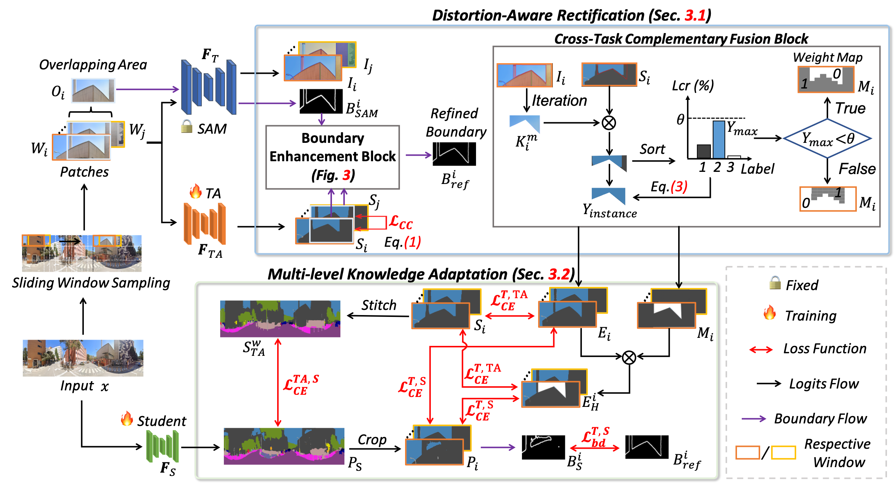

GoodSAM++: Bridging Domain and Capacity Gaps via Segment Anything Model for Distortion-aware Panoramic Semantic Segmentation
ArXiv
-
Weiming Zhang
AI Thrust, HKUST(GZ)
-
Yexin Liu
AI Thrust, HKUST(GZ)
-

Xu Zheng
AI Thrust, HKUST(GZ)
-

Addison Lin Wang
AI & CMA Thrust, HKUST(GZ)
Dept. of CSE, HKUST

Abstract
This paper presents GoodSAM++, a novel framework utilizing the powerful zero-shot instance segmentation capability of SAM (i.e., teacher) to learn a compact panoramic semantic segmentation model, i.e., student, without requiring any labeled data. GoodSAM++ addresses two critical challenges: 1) SAM's inability to provide semantic labels and inherent distortion problems of panoramic images;2) the significant capacity disparity between SAM and the student. The `out-of-the-box' insight of GoodSAM++ is to introduce a teacher assistant (TA) to provide semantic information for SAM, integrated with SAM to obtain reliable pseudo semantic maps to bridge both domain and capacity gaps. To make this possible, we first propose a Distortion-Aware Rectification (DARv2) module to address the domain gap. It effectively mitigates the object deformation and distortion problem in panoramic images to obtain pseudo semantic maps. We then introduce a Multi-level Knowledge Adaptation (MKA) module to efficiently transfer the semantic information from the TA and pseudo semantic maps to our compact student model, addressing the significant capacity gap. We conduct extensive experiments on both outdoor and indoor benchmark datasets, showing that our GoodSAM++ achieves a remarkable performance improvement over the state-of-the-art (SOTA) domain adaptation methods. Moreover, diverse open-world scenarios demonstrate the generalization capacity of our GoodSAM++. Last but not least, our most lightweight student model achieves comparable performance to the SOTA models, e.g.,[1] with only 3.7 million parameters.
Overall framework of our GoodSAM++
An overview of our GoodSAM++.
